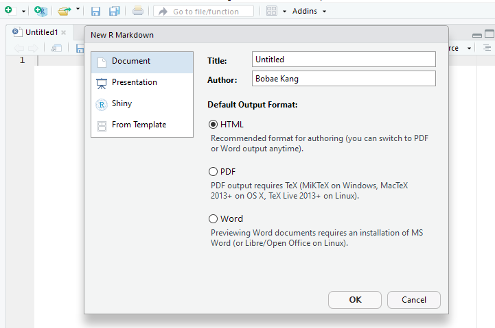
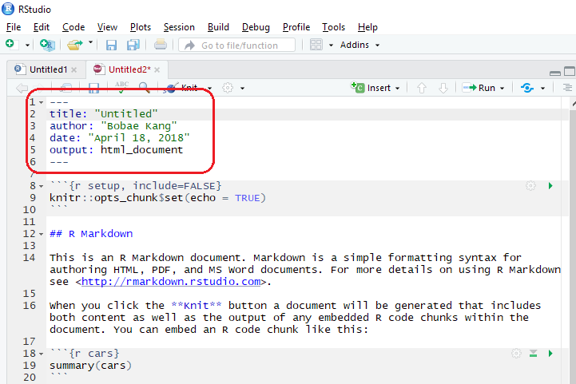
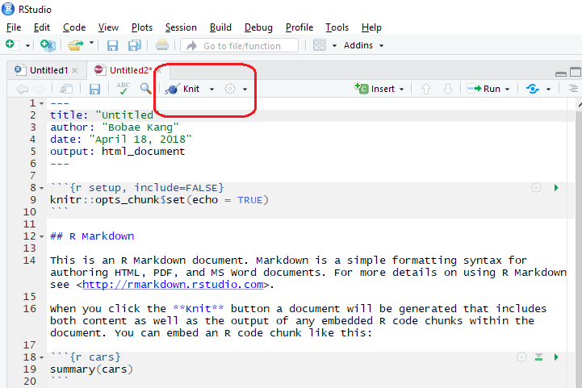
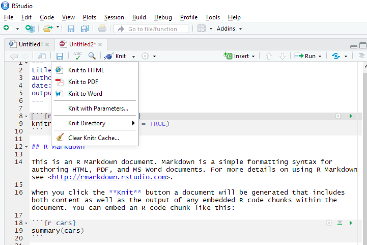

R Workshop: Module 6 (1)
Bobae Kang
April 18, 2018

This page contains the notes for the first part of R Workshop Module 6: “To Infinity and Beyond”, which is part of the R Workshop series prepared by ICJIA Research Analyst Bobae Kang to enable and encourage ICJIA researchers to take advantage of R, a statistical programming language that is one of the most powerful modern research tools.
Links
Click here to go to the workshop home page.
Click here to go to the workshop Modules page.
Click here to view the accompanying slides for Module 6, Part 1.
Navigate to the other workshop materials:
“To Infinity and Beyond” (1): Sharing your work
R Markdown
type:section
Source: R Markdown
What is R Markdown?
“R Markdown is a file format for making dynamic documents with R. An R Markdown document is written in markdown (an easy-to-write plain text format) and contains chunks of embedded R code.”
- Garret Grolemund from R Studio
Why use R Markdown?
- Reproducible
- Multiple document formats
- Embedding R code chunks (and the outputs)
Getting started
- Install
rmarkdown- not necessary if using R Studio IDE
- Create a R markdown document
- File > New File > R Markdown
- “Knit” the R markdown document into a file in the desired format




R Markdown structure
- YAML header
- Knit and preview outputs
- Markdown
- Code chucks
YAML header

YAML header options
- Title, author, date
- output
- output format
- output options
- different output format has different options
Knit and preview

Knit options

Preview options

Markdown

Markdown basics
- Headers
- Font types (italic, bold, strikethrough, superscript)
- Lists (ordered, unordered)
- Hyperlinks
- Images
- Blackquotes
- Horizontal line/page break
- Math equations (using LaTeX)
- Code/R code (chunk, in-line)
Headers
# Header 1
## Header 2
### Header 3Font types
_italic_ __bold__
*italic* **bold**
~~strikethrough~~
superscript^2^Lists
Unordered list | Ordered list
|
* Item 1 | 1. Item 1
* Item 1a | 1. Item 1a
* Item 2 | 2. Item 2
+ Item 2a | 1. Item 2a
- Item 2b | 2. Item 2bMixed list
1. Item 1
* Item 1a
* Item 2
1. Item 2a
+ Item 2bHyperlinks
[text with hyperlink](http://link.path)Images

Blockquotes
> A line of text following the "> " is a blockquote.A line of text following the “>” is a blockquote.
Horizontal line/page break
More then three asteriks or dashs
***
******
------Math equations
Inline math equations look like: $y = (x + 1)^2$Inline math equations look like: \(y = (x + 1)^2\)
A block of math equations look like:
$$y = x^2 + 2x + 1$$A block of math equations look like: \[y = x^2 + 2x + 1\]
R code chunk

Insert a new code chunk

- keyboard shortcut:
Ctrl + Alt + i
Run code chunks

- keyboard shortcut:
Ctrl + Enter
knitr options
# use the following to control global options
knitr::opts_chunk$set(eval = TRUE, echo = TRUE, ...)- Global options
- Act as the default settings for the whole document
_```{r eval = FALSE, echo = FALSE, ...}- Local options (per code chunk)
- Only applied to the specific code chunck
- Overide the global options if relevant
- See here for full documentation of
knitrchunk options
Commonly used options
| Option | Description |
|---|---|
eval (TRUE) |
Evaluate code in chunk? If FALSE, only code is shown |
echo (TRUE) |
Show code in chunk? If FALSe, only output is shown |
error (FALSE) |
Preserve the error? If TRUE, knitting continues in case of errors |
message (TRUE) |
Display code messages? |
warning (TRUE) |
Display code warnings? |
include (TRUE) |
Include the code chunk? If FALSE, neither code nor output is shown but code is still evaluated |
fig.show (asis) |
How to show/arrange plots? ("asis", "hold", "animate", "hide") |
fig.width, fig.height (7) |
Plot width and height in inches. |
Tables
- Printing basic data frame object
- Proper (HTML) tables with
knitr::kable() - Interactive tables with
DT::datatable()
Default print example
my_table## my_fruits my_animals my_flavors my_colors my_cities
## 1 apple dogs chocolate red Chicago
## 2 banana cats vanila green New Work
## 3 clementine llamas cookie dough orange Los Angeleskable example
knitr::kable(my_table)| my_fruits | my_animals | my_flavors | my_colors | my_cities |
|---|---|---|---|---|
| apple | dogs | chocolate | red | Chicago |
| banana | cats | vanila | green | New Work |
| clementine | llamas | cookie dough | orange | Los Angeles |
datatable example
DT::datatable(my_table)Documents
Source: Wikimedia Commons
R Markdown output formats
- R Markdown supports various output formats
- Output format can be specified using
outputin the YAML header- The same document can be rendered in multiple formats
- Different output format has different YAML render options
- Refer the page 2 of R Markdown cheat sheet on RStudio’s Cheat Sheets page for a full list
Common output formats
output value |
Creates |
|---|---|
html_document |
HTML file |
html_notebook |
R Notebook HTML file |
pdf_document |
PDF (requires Tex) file |
word_document |
Microsoft Word file |
md_document |
Markdown file |
github_document |
GitHub compatible markdown file |
Commonly used YAML render options
| Option | Description | Available for |
|---|---|---|
css |
CSS file to use to style document | html |
highlight |
Syntax highlighting | html, pdf, word |
number_sections |
Add section numbering to headers | html, pdf |
theme |
Bootswatch theme to use for page | html |
toc |
Add a table of contents | html, pdf, word, md, github |
toc_depth |
The lowest level of headings in toc | html, pdf, word, md, github |
toc_float |
Float the toc on the left | html |
Output appearances
- Available highlights:
"default","tango","pygments","kate","monochrome","espresso","zenburn","haddock", and"textmate" - Available themes:
"default","cerulean","journal","flatly","readable","spacelab","united","cosmo","lumen","paper","sandstone","simplex", and"yeti"- R Markdown themes are drawn from “Bootswatch” themes
R Notebooks
“An R Notebook is an R Markdown document with chunks that can be executed independently and interactively, with output visible immediately beneath the input.”
- “R Notebooks”, RStudio
- While all other R Markdown formats requires “knitting” to see the final output, an R notebook document is automatically re-rendered each time the source file (
.Rmd) is saved - Offers a more interactive workflow
htmlwidgets for R
- Thera are many R packages (90+) for taking full advantage of the interactivity that web can offer.
- With these packages, we can easily incorporate interactive widgets into HTML documents generated using R Markdown
- Examples of
htmlwidgetsinclude:plotlyandhighcharterfor interactive visualizationsleafletfor interactive mapsDTfor interactive data tables
- Visit
htmlwidgetsfor R website to find out more
RPubs
“RPubs is a quick and easy way to disseminate data analysis and R code and do ad-hoc collaboration with peers.”
- RStudio Team
- Publishing an R Markdown output on RPubs is as easy as clicking the “publish” button on RStudio
- Comparable to Tableau Public’s Gallery website(?)

Presentations
Source: Wikimedia Commons
Creating presentation slides
- RStudio supports many ways to create presentation slides that are both modern-looking and highly customizable
- Popular ways to create slides using R include:
- R Markdown formats:
ioslides_presentation(HTML)revealjs::revealjs_presentation(HTML)slidy_presentation(HTML)beamer_presentation(PDF)
- R Presentation (HTML)
- R Markdown formats:
ioslides
---
title: "My first ioslide presentation"
output: ioslides_presentation
---ioslidesoutput format is built into RStudio- Fully integrates R Markdown syntax
- Creating new slides is as easy as using
#and##headings
- Creating new slides is as easy as using
- To learn more about
ioslides, read the “Presentations with ioslides” article on RStudio
ioslides sample source code
---
title: "My first ioslide presentation"
author: Bobae Kang
date: April 18, 2018
output: ioslides_presentation
---
# First section
## Normal slide
- Item one
- Item two
## Another slide | With a subtitle
This slide has a two-column layout
----

example
revealjs
---
title: "My first revealjs presentation"
output: revealjs::revealjs_presentation
---- With
revealjsR package, it is possible to use R Markdown (and its syntax) to generate slides using reveal.js, a JavaScript library for interactive slides in HTML- Try this demo slides generated using reveal.js
- To learn more about
revealjs, read the “Presentations with reveal.js” article on RStudio
example
Other formats
- HTML presentations with
slidy- Use
output: slidy_presentationin the YAML header - See the “Presentations with Slidy” article on RStudio
- Use
- PDF presentations with
beamer- Use
output: beamer_presentation - See the “Presentations with Beamer” article on RStudio
- Use
- HTML presentations with
xaringan- Use
output: xaringan::moom_reader - Visit the package GitHub repository for more
- Use
R Presentation
- R Presentation is not a R Markdown document
- Similar to R Notebook, R Presentation offers an interactive “Preview” which gets automatically re-rendered each time the source file (
.RPres) is saved - R Presentation slides are built on reveal.js
- All Workshop slides are generated using R Presentation
- Unfortunately, it is no longer in active development
- To learn more about R Presentation, visit relevant pages on RStudio Support website
Shiny
Source: R Studio
What is Shiny?
“Shiny is an open source R package that provides an elegant and powerful web framework for building web applications using R. Shiny helps you turn your analyses into interactive web applications without requiring HTML, CSS, or JavaScript knowledge.”
- RStudio.com
- Try my ICJIA Uniform Crime Report Data dashboard app here
- Check out more examples on RStudio’s “Shiny User Showcase” page
Dashboards
- A data dashboard is a visual interface to data to allow its viewers for gain key insights
- It is often an interactive application that provides viewers with options to explore data from multiple angles interactively
- A Shiny application can make a great dashboard
Interactive documents
- Shiny can be used to generate interactive documents with Shiny app widgets
- An interactive document is an R Markdown file with the YAML head including
runtime: shinyandoutput: html_documentoroutput: ioslids_presentation - Embedded Shiny R code will render a mini application
Structure of an interactive document

Source: “Introduction to interactive documents”. Shiny from R Studio
Getting started
install.pacakges("shiny")
library(shiny)
runExample("01_hello")- Shiny is a package: install and import it
- Try a simple built-in example for Shiny application!
Parts of Shiny application
- A Shiny app consists of two parts,
serverandui - They can be separated into two files,
server.Randui.R- Both files must be located in the same directory
- Alternatively, both parts can live in a single file,
app.R
server.R
function(input, output, session) {
## R code for server logic
}server.Rcontains the server-side logic of the applicationinputobject is an environment for storing user inputs modified by user’s interaction with the application UIoutputobject is an environment for storing elements (plots, tables, texts, etc) to be rendered and shown in the UIsessionobject is an environment that can be used to access information relating to the sessionsessionis optional
ui.R
fluidPage(
## R code for user interface
)ui.Rdefines the user interface elements:- layouts, panels, inputs and outputs
- Available layouts include: the sidebar layout and grid layout
- Available panels include: the title panel, sidebar panel, main panel, tabset panel, navigation list panel, and more
shinyoffers many functions to take user inputsshinyoffers many functions to render outputs (as defined inserver.R)
app.R
library(shiny)
server <- function(input, output) {
# server-side logic
}
ui <- fluidPage(
# user interface
)
shinyApp(ui, server)app.Rmust includeshinyApp(ui, server)at the endserveris an object containing code for server-side logicuiis an object containing user interface elements
More on Shiny development
- Developing a Shiny app takes much practice, planning and pain experiment
- However, the reward is YUGE!
- Start with these tutorials by RStudio
- Follow along these articles by RStudio
- Refer to Shiny Gallery for examples and inspirations
Deploying Shiny apps
- Shiny applications, including the interactive documents, can be deployed for use in the following ways:
- Via shinyapps.io
- Via Shiny Server
- Via ShinyProxy
Deploying via shinyapps.io
- The easiest way to deploy/publish a Shiny application
- Takes only a few clicks on the RStudio IDE
- Requires signing up to shinyapps.io
- Can log in with Google or GitHub account
- See the pricing for hosting Shiny apps on the website
- Free hosting is available but limited to 5 applications and 25 active hours per month
Websites
Source: Wikimedia Commons
Static websites
- A collection R Markdown documents in HTML format can be made into a website
- To do so, we need a
_site.ymlfile in the same folder as individual documents to be put together _site.ymlspecifies the name and the routing structure of the resulting website- With
_site.ymland all HTML documents ready, runrstudio::render_site()to generate the website
- To do so, we need a
- For details, see the “R Markdown Websites” article on RStudio website
_site.yml format example (Workshop website)
name: ICJIA R Workshop
output_dir: '.'
navbar:
title: ICJIA R WORKSHOP
right:
- text: Home
href: index.html
- text: Modules
href: modules.html
- text: About
href: about.html
output:
html_document:
includes:
after_body: include_footer.html
css: css/style.css
lib_dir: site_libs
self_contained: noHosting websites on Github Pages
“GitHub Pages is a static site hosting service designed to host your personal, organization, or project pages directly from a GitHub repository.”
-“What is GitHub Pages?”, GitHub Help
Books with blogdown
bookdownpackage, built on R Markdown, facilitates writing books and long articles/reports.- A
bookdownpublication is made downloadable in PDF, EPUB and MOBI formats
- A
- Check out
bookdownpackage website to find out more - Also, read Xie, Y. (2018).
bookdown: Authoring Books and Technical Documents with R Markdown for a comprehensive guide forbookdown- The book itself is generated using
bookdown
- The book itself is generated using
bookdown: Authoring Books and Technical Documents with R Markdown

Blogs with blogdown
blogdownis a package to generate static websites using R Markdown and the Hugo open-source framework for building websites- Visit Awesome Blogdown website for a curated list of
blogdownexamples - Also, read Xie, Y. et al. (2018).
blogdown: Creating Websites with R Markdown for a comprehensive guide forblogdown
Example 1: OpenGIS and Stuff

Example 3: Tales of R

References
- Sellors, M. Awesome Blogdown
- Chang, W. (2017). “App formats and launching apps”. Shiny from RStudio
- Grolemund, G. (2014). “Introduction to interactive documents”. Shiny from RStudio.
- Grolemund, G. (2014). “Introduction to R Studio”. R Markdown from RStudio.
- RStudio. (2016). R Markdown Cheat Sheet“.
- Xi, Y. (2018). “Options: Chunk options and package options”. knitr: Elegant, flexible, and fast dynamic report generation with R.